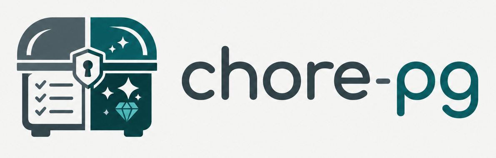

Support
Contact
For questions, problems, feature requests, or privacy enquiries, email:
Common questions
Where is my family's data stored?
On your device, in the app. ChorePG has no account to create and no server that collects your household's activity. See the Privacy Policy for the full detail.
How do I delete everything?
Deleting the app, or clearing its app data, removes the local ChorePG data from that device. There is no separate account to close, because there is no account.
Will our data survive a lost, reset, or replaced iPad?
Yes, if the iPad is being backed up. ChorePG keeps your household data and media in the app's Documents area, which is included in iOS device backups. Restoring that backup onto a new or reset iPad brings ChorePG's data with it. Encrypted computer backups work the same way.
Two things worth checking, because they are outside the app's control: backups only run if Settings › [your name] › iCloud › iCloud Backup is turned on, and only if the iCloud account has space — a full iCloud account stops backing up quietly. Celebration videos are stored alongside your household data, so a lot of video makes the backup larger.
Can I use ChorePG on more than one device?
Not in this version. A household's data lives on the single device it was set up on, and there is no sync between devices yet.
Does ChorePG need an internet connection?
No. This version has no network features — it runs entirely on the device.
Who can create tasks and approve work?
Adults. Members with the adult role set up the household, create and edit tasks, approve completed work, and adjust rewards. Members with the kid role complete quests and earn XP, streaks, and rewards.
How do I stop a kid changing adult settings?
Set an adult PIN under Settings › Security & Lock.
Are there ads, tracking, or analytics?
No. ChorePG contains no advertising SDKs, no third-party tracking, and no third-party analytics, and does not sell household data.
Can I add our own photos and videos?
Yes. An adult can add avatar photos and celebration videos. Those files are stored in the app's data area on the device.